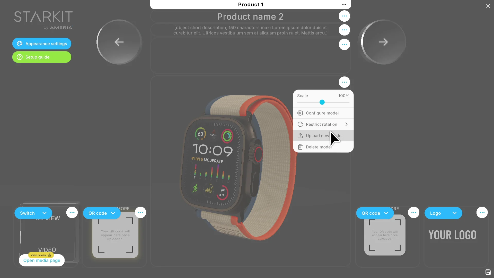

CorelDRAW for macOS
A UX case study on bringing CorelDRAW Graphics Suite to macOS — balancing business goals, user needs and technical reality, staged across three releases.
What is UX
Where business, users and tech meet
A successful macOS product lives where business goals, real user needs and technical ability overlap — not where any one of them wins alone. We design the macOS product for that intersection, not for any single force.
The Challenge
Winning over Mac users
Turn today's friction into a loyal Mac user — without dropping below Corel's design standards along the way.
-
Today
- Not-loyal, hard-to-win users
- Heavy technical debt
- Tool complexity & feature cascade
- Missing native macOS features
-
Target
- A loyal, returning Mac user
- A native, modern experience
- A unified, maintainable product
- Room to follow UX trends
Strategy
Business
Research the market, set standards, and sequence the work so progress ships without compromising design quality. Progress over perfection — but never below design standards.
- Phase 1Prepare the MVPResolve technical debt and ship the minimum viable set of macOS features.Technical debtMin macOS featuresmacOS MVP
- Phase 2Improve the experienceToolbars, dockers and native support; simplify features cross-platform and start user research.Toolbar & dockersNative supportNew audience
- Phase 3Go fully nativeSupport all native features including Touch Bar, target key audiences, and introduce context-sensitive, real-time UX.Touch BarReal-time previewContext-sensitive
Three phases move Corel from resolving technical debt in 2017 to a genuinely macOS-native experience by 2019.
Unifying the roadmap
- P1Resolve technical debt, prepare the macOS MVP
- P2Ship Windows & macOS releases, begin cross-platform simplification
- P3Unified Windows / macOS release led by a shared core UX team
Separate Windows and macOS tracks converge on a shared core UX team and a unified release by 2019. In January 2017 the work is at Phase 1.
A shift in paradigm
-
From
Feature-driven
- Ship parity with Windows
- Expose every capability
- Optimise for power users
-
To
User-centered
- Start from user goals
- Progressive disclosure
- Simplify for every audience
Each phase moves the product further from feature-driven thinking toward a user-centered one.
Research
Users
Understand who uses Corel, why engagement is weak, and what would earn their loyalty. Where CorelDRAW loses people — and how they cope when they stay.
40%
of prospects are lost on the very first engagement
- 85% — learn by trial and error
- 30% — say it is too expensive
- 21% — are satisfied as-is
- 12% — cite bad UX
A highly diversified audience
- Segment 01Occasional businessNeeds quick, correct results for everyday business collateral.Business cardsSignsNewsletters
- Segment 02Hobbyist & graphicCreates occasionally; values approachability over depth.Greeting cardsPhotosIllustration
- Segment 03ProfessionalDepends on Corel daily across print, web and technical work.Logos & brochuresTechnical & CADApparel & web
From occasional business users to full-time professionals — each with different goals, skill and output.
Loyal users, three ways
- Peter · 32Freelance designerDesign-educated and artistic. Recently on macOS because "Mac is for designers." Wants Windows familiarity, better performance and native UI.Price: sensitiveReuse license
- Joyce · 45Layout & small studioNo design education; leads a few designers. Moving her workflow to macOS for a stable, virus-free ecosystem. Slow to learn new tools.Price: sensitiveGroup license
- Burt · 57Sign makerTechnical and mature in his tools. Considers macOS for hardware integration and performance — Corel is one link in his chain.Price: less sensitiveIntegration
Loyal users move to macOS for different reasons — familiarity, a stable ecosystem, or raw performance and integration.
What the research told us
-
Findings
What we know
- The tool is seen as expensive
- Weak first-run engagement
- Fuzzy, hard-to-target audience
-
Next
What we will do next
- Qualitative user research
- Surveys at scale
- Feature-by-feature analysis
Clear problems to solve — and a clear signal that we need to keep researching with surveys and feature analysis.
Constraints
Tech
A shared codebase, heavy debt and framework limits mean we sequence carefully rather than expecting dramatic change overnight.
- One unified source code across platforms
- Significant accumulated technical debt
- Framework limitations (Qt)
- 2018 feature set still to land
- macOS-specific features on top of all of it
Unify or differentiate?
-
Option A
Cross-platform unification
One shared experience on every platform.
- Familiar to users on any platform
- Easier to develop and support
-
Option B
Platform differentiation
Each OS gets a tailored experience.
- Optimised for each operating system
- Can target different audiences
Two ways to handle Windows and macOS from one core — each with real trade-offs.
Principles
Design
What "feels like macOS" means — the principles we hold every macOS decision against.
- 01Real-time previewShow the end result as properties change.
- 02PerformanceExploit the latest macOS and Apple hardware.
- 03Clear structureMake relationships between views and controls obvious.
- 04Maximise contextAvoid feature cascade and irrelevant controls.
- 05Progressive disclosureReveal complexity only when it is needed.
- 06ConsistencyLet users transfer skills from app to app.
From Corel UI to macOS UI
Re-map today's Windows-first structure onto common macOS UI architecture — a single menu bar, inspectors, toolbars and native dialogs.
Where the design work goes next
Four workstreams turn the strategy into a shippable macOS experience.
- 01UI breakdownAudit every screen, control and flow in today's product.
- 02Cross-platform layoutsDefine shared and platform-specific layout rules.
- 03Core redesignRework the core interface around macOS principles.
- 04Design systemA reusable system to keep both platforms consistent.
Interactive UI breakdown
Hover or tap a region to see the work planned for it.
Next project
STARKIT SRD
Touch-free 3D on Sony's Spatial Reality Display →
